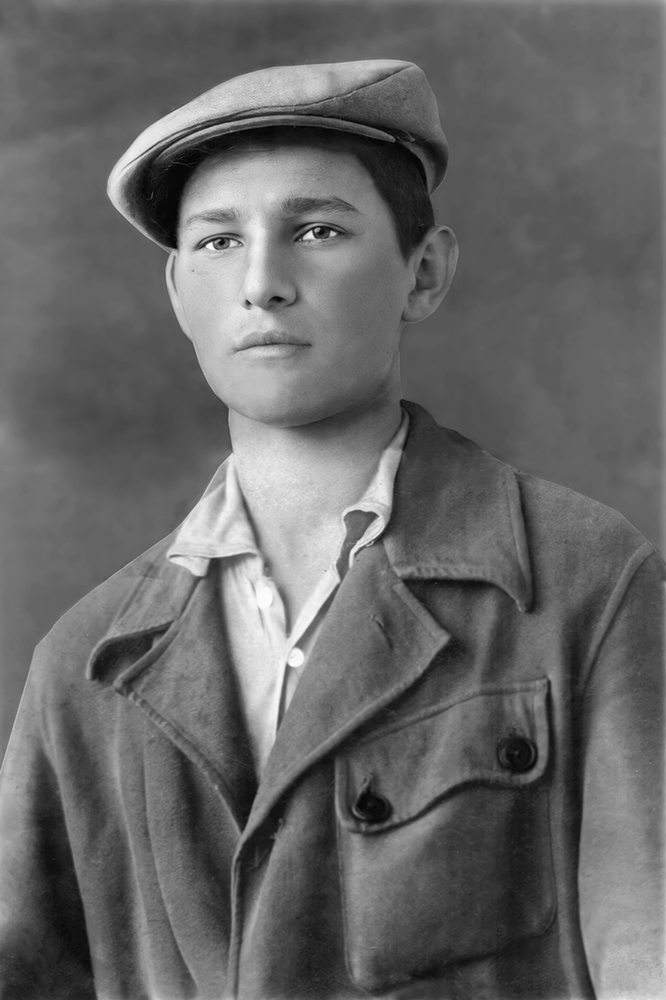
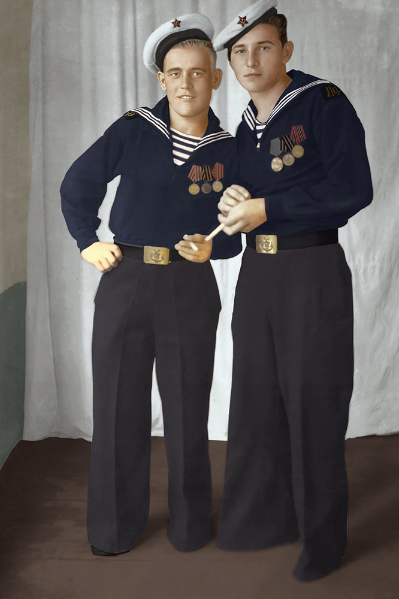
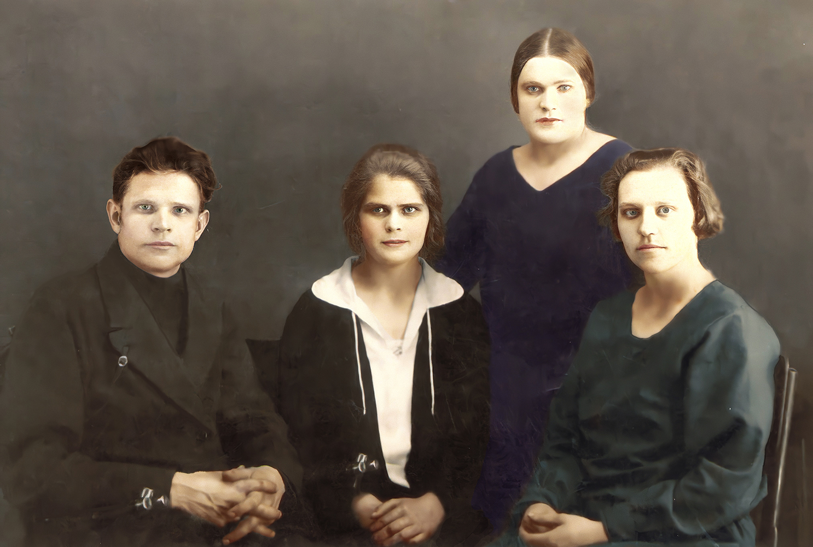
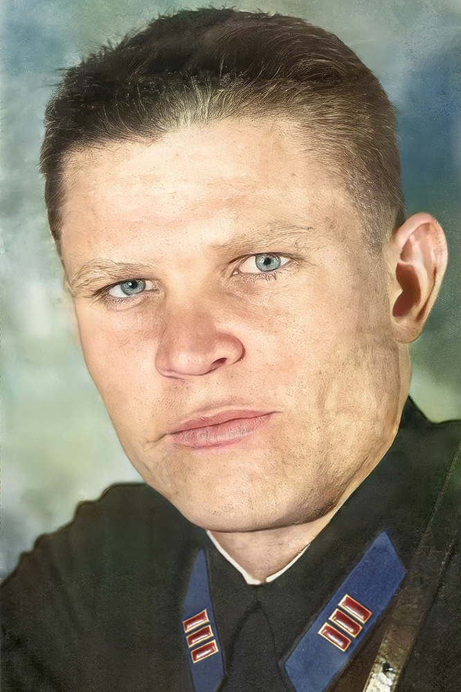
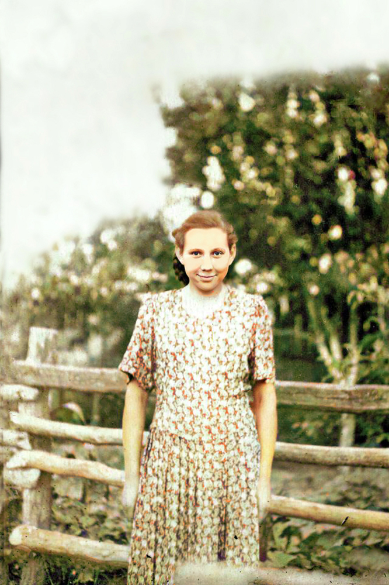
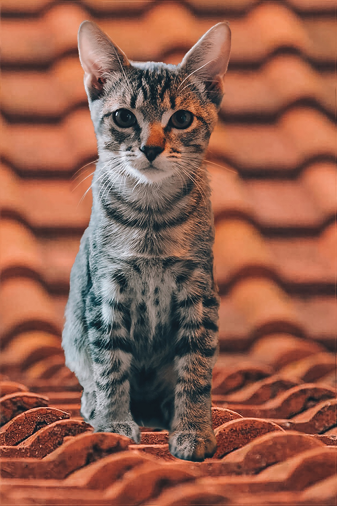
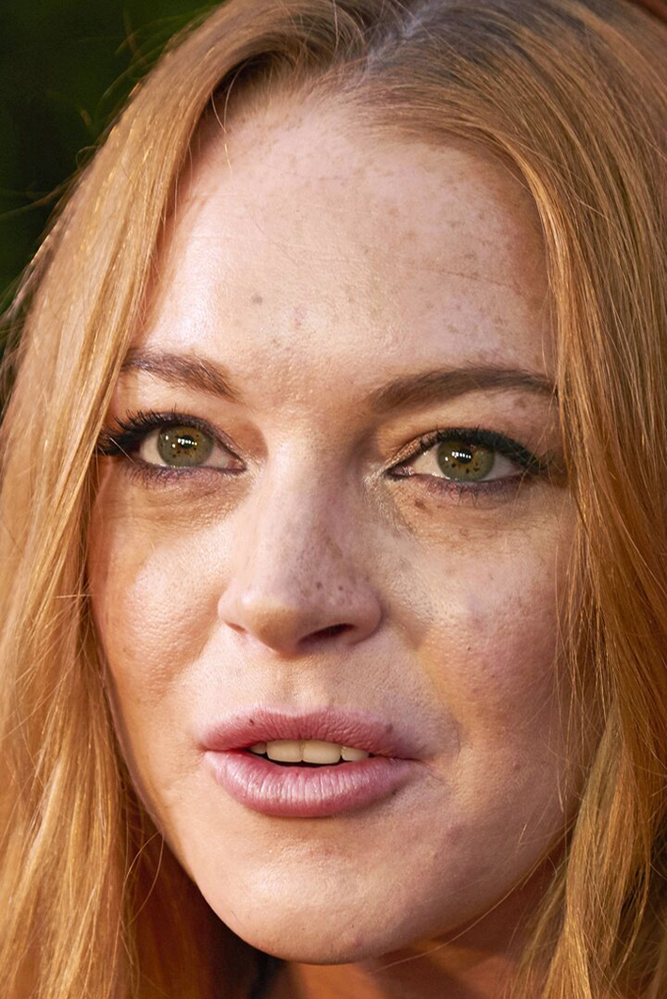
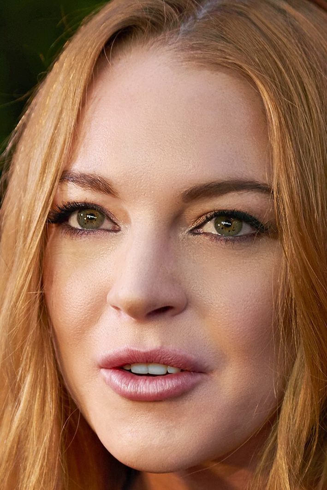
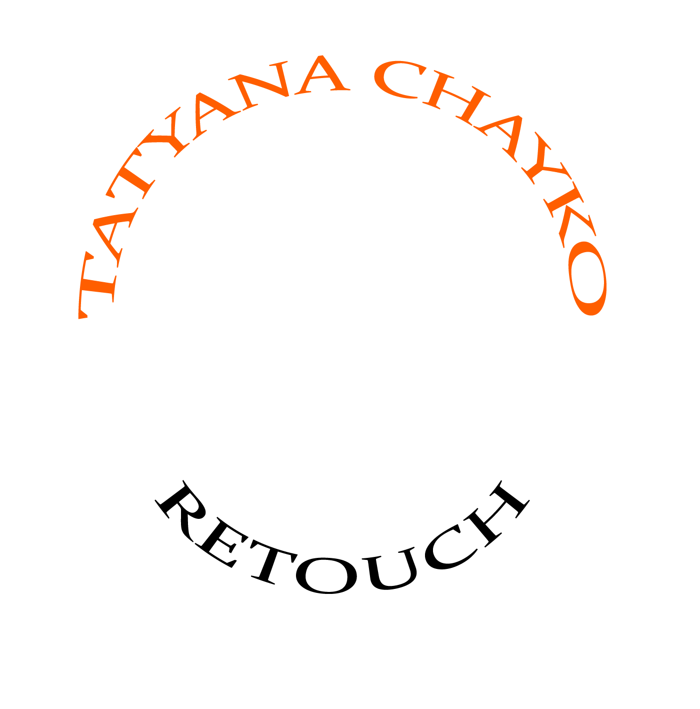

Профессиональная реставрация фотографий, добавление цвета на черно-белые фото, удаление лишних объектов, ретушь портретов.
Люблю свою работу, поэтому делаю чисто и аккуратно, без применения фильтров, сохраняю важные детали, и незаметно избавляюсь от дефектов.
Срок 1-2 дня.
РЕСТАВРАЦИЯ ФОТО


Реставрация фото может потребоваться для акции “Бессмертный полк”, для фото на памятник или для семейного архива.
Часто оригинальные фото на бумаге со временем портятся, или могут быть
изначально не очень хорошего качества.
Я могу помочь восстановить и сохранить фотографию родственника или друга.
Главное чтобы на фото читались черты лица, иначе не будет возможности
его восстановить . Еще я могу исторически верно восстановить цвета одежды,
орденов, медалей, из маленького фото сделать большое, улучшить резкость
и из группового фото сделать портрет.
ЦЕНЫ:
Убрать с фото трещины, пятна, царапины, замятыши, пыль, добавить четкости - от 600 Р
Восстановить утерянные участки, убрать сильные повреждения,
прорисовать одежду, ордена и медали, добавить четкость, если на фото несколько людей - от 1000 Р
Добавление цвета от 300 Р.



ФОТОМОНТАЖ

Часто в кадр попадает что-то, что лучше бы туда не попадало.
Или наоборот : пока вы искали удачный ракус заката, солнце уже
ушло. Такие вещи иногда не зависят от камеры или фотографа,
но это можно исправить графическими редакторами.
Никто не догадается!
ЦЕНЫ:
Убрать с фото объекты, людей - от 600 Р
Добавить на фото объект, замена фона- от 1000 Р
РЕТУШЬ ПОРТРЕТОВ


Далеко не у каждого человека гладкая кожа без неровностей и морщинок.
У нас есть недостатки, и это нормально. Но иногда хочется выглядеть на фото классно,
как с обложки журнала.
ЦЕНЫ:
Убрать с фото объекты, людей - от 600 Р
Добавить на фото объект, замена фона- от 1000 Р

КАК Я РАБОТАЮ:
Шаг 1 - Заказ
При заказе нужно приложить фото, указать электронную почту и номер
телефона для связи. Также описать чего Вы бы хотели, дать нам
техническое задание. Это ни к чему Вас не обязывает, техническое
задание нужно для того, чтобы мне был понятен объем работ.
Шаг 2 - Согласование
После этого я связываюсь с Вами, для уточнения деталей, озвучиваю
цену, и, если Вас все устраивает, выполняю работу. Если у Вас много
фотографий, я могу выполнить обработку одного фото бесплатно, в
качестве тестового задания.
Шаг 3 - Результат
На Вашу почту приходит обработанное фото с водяными знаками.
После нужно оплатить заказ, и я вышлю фото без водяных знаков.
*На этом этапе можно внести правки до оплаты заказа.